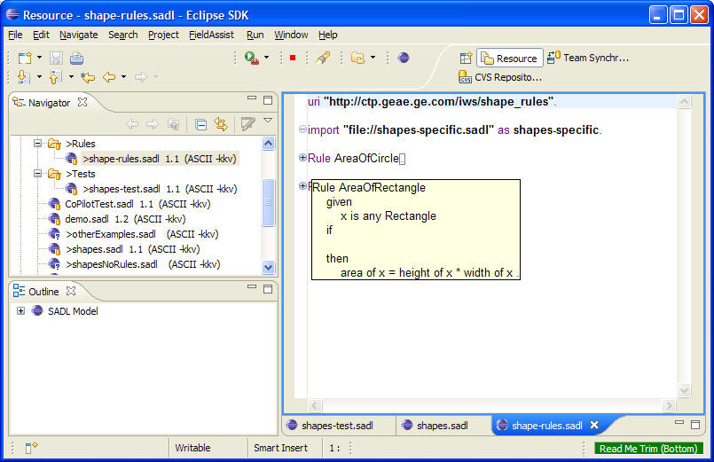

Semantic Application Design Language (SADL)
Last revised
01/13/2011 by
A. W. Crapo
Introduction
The Semantic Application Design Language (SADL) is a language for building
semantic models and expressing rules that capture additional domain knowledge.
The SADL-IDE (integrated development environment) is a set of Eclipse plug-ins
that support the editing and testing of semantic models using the SADL language.
This document provides a brief description of SADL and the SADL-IDE. A simple semantic model
of geometric shapes is used through out the main body of this document to
illustrate the
concepts embodied in SADL and the SADL-IDE in a concrete way.
Semantic Models
A semantic model is a formal declaration of what can (or does) exist in a
domain of interest. As a language, SADL captures a subset of the expressive
capability of the
Web Ontology Language (OWL). Appendix A provides a complete mapping of
current SADL constructs to their OWL equivalents, although additional future
mappings are expected both to more completely support construction of OWL models
and because OWL is itself evolving as a W3C recommendation.
Semantic models expressed in SADL (and OWL) are modular in nature. This
allows large, complex models to be broken down into more maintainable pieces. It
also allows portions of models to be shared between different applications. Each
piece of a model is given a unique name in the form of a
URI. The connection between
pieces of a model is established by the "import" statement. One model, usually a
more specific or detailed model, can import another, usually a more general,
model.
Below are two very simple SADL models; the second imports (extends) the
first.
shapes-top.sadl
uri
"http://ctp.geae.ge.com/iws/shapes_top".
Shape
is
a
top-level
class.
area describes
Shape
has
values
of
type
float.
shapes-specific.sadl
uri
"http://ctp.geae.ge.com/iws/shapes_specific".
import
"file://shapes-top.sadl"
as shapes-top.
Circle
is
a
type
of
Shape.
radius
describes
Circle has
values
of
type
float.
Rectangle is
a
type
of
Shape.
height
describes
Rectangle has
values
of
type
float.
width
describes
Rectangle has
values
of
type
float.
Note that the alias given to the imported model specifies a prefix. The name
given to a SADL file in the "uri ..." statement defines an
XML namespace. It is possible
that a term such as "Circle" might be defined in two are more namespaces,
possibly with different definitions. (This is sometimes unavoidable if one is
importing models from different sources.) The prefix can be used to disambiguate
the concept being used. For example, the third line in the second file above
might be rewritten as:
Circle
is
a
type
of
shapes-top:Shape.
Of course this is not necessary here, since we are not importing multiple
models with different definitions of "Shape".
Rules
Support for rules in SADL is informed by the
Semantic Web Rule Language (SWRL). Hence SADL rules are written in terms of
the concepts defined in the semantic model. The SADL-IDE currently supports
conversion of the rules either to
SWRL or to the
Jena Rule
Language.
Below is a model containing two rules. Note that by importing "shapes-specific.sadl",
"shapes-top.sadl" is also included since the former imports the
latter.
shape-rules.sadl
uri
"http://ctp.geae.ge.com/iws/shape_rules".
import
"file://shapes-specific.sadl"
as
shapes-specific.
Rule
AreaOfCircle
given
x
is
any
Circle
if
then
area
of
x = (radius
of
x *
radius
of
x) * 3.14159 .
Rule
AreaOfRectangle
given
x
is
any
Rectangle
if
then
area
of
x =
height
of
x *
width
of
x .
Note that the "if" or the "given" sections may be empty. When converted to
SWRL or Jena Rules, both "if" and "given" statements become part of the rule
body while the "then" statements become the rule head.
Instance Data
Semantic models can include instance data--information about specific
instances of the concepts defined for the domain. For example, the file below
defines two specific instances of subclasses of the Shape concept:
shapes-test.sadl
uri
"http://ctp.geae.ge.com/iws/shapes_test".
import
"file://shape-rules.sadl"
as shape-rules.
MyCircle
is
a
Circle,
has
radius 3.5.
MyRect is
a
Rectangle,
has
height 3.5,
has
width 4.5.
The SADL-IDE
An integrated development environment (IDE) provides comprehensive facilities
for helping someone to say useful things in a particular language, in this case
SADL. The SADL-IDE
is built using the IDE Meta-Tooling Platform (IMP) from IBM Watson Research. IMP
is an Open Source project available from
SourceForge under the
Eclipse Public
License. (It is being moved to an Eclipse incubator project at
http://www.eclipse.org/imp/.) Much of
the functionality of the SADL-IDE, implemented or pending implementation, uses IMP.
This functionality includes:
- Coloring words in the language in different colors depending upon their
semantic type, e.g., class, property, instance. The screenshot below shows all
of the concepts illustrated above in a single model file:

Classes (sets of things) such as Shape are dark blue bold, properties
(attributes, relationships) are green, instances are light blue, keywords in
the language (e.g., describes) are magenta, literals (e.g., 3.14159) have a blue background, variables in rules
are pink, and other identifiers such as the names of rules and mathematical
operators are black.
- Marking errors in a text and providing information about the nature of the
error. In the example below the name of the super class of Rectangle is
mistyped. When the cursor is placed over the red X marker in the margin or
over the red underline of the word "Shapes", a message pops up describing the
error.

- Completion proposals for the expression or for the text as a whole. In the
example below, content suggestions have been requested with the cursor on an
empty line.

- Hyper linking the use of terms to their definitions. (not currently
implemented)
- Reformatting of a SADL file to adjust indentation, spacing, etc., to a
particular style. (not currently implemented)
- Taking action on a document (file) such as converting to OWL/SWRL or
validating the model using a reasoner. In the screenshot below, the user has
right-clicked on the "shapes-test.sadl" filename in the Navigator pane and
selected "Validate and Test with Jena" on the action menu.

- Providing an expandable/collapsible outline of a document (see screenshot
in #1 above).
- "Folding" portions of a document so that it occupies a single line to hide
detail. In the screenshot below the two rules are folded to a single line each and
the cursor is placed over the "+" in front of one of the rules to
expose the
folded content in a popup window.

IMP supports additional IDE functionality that may be useful and could be
relatively easily added to the SADL-IDE, and future functionality of IMP will
likely be useful as well.
Note that the SADL-IDE uses the Eclipse Resource perspective. As an Eclipse
plug-in, tight integration with source control systems such as CVS or SVN is
available. Unlike many representations of OWL, SADL files are nicely ordered and
easily compared using normal Eclipse file comparison facilities.
Reasoning
Reasoning over a set of SADL documents takes two basic forms. Validation of a
model involves checking the model for contradictions or inconsistencies. Rule
processing involves examining the rules in the model inlight of the current
instance data to see if any
of the rules can "fire" to infer additional information. Two reasoners are
integrated with the SADL-IDE. If the rules are converted to SWRL, then Pellet
may be used to perform both kinds of reasoning. If the rules are converted to
Jena Rules, then the Jena Rules Engine can be used for both kinds of reasoning.
Testing
SADL supports one construct which goes beyond the expressivity of OWL--the
concept of a test. A test in SADL consists of the keyword "Test:" followed by a
statement about a named instance (see Instance Data above). If the reasoner can verify that the statement
is true the test passes, otherwise it fails. The screenshot below illustrates a
set of tests to validate the calculation of the areas of the two Shape
instances, along with inherited type (Shape) and the specified width of MyRect.
The Console window shows the results of running these tests along with
abbreviated derivation information for those items that are set by rules. The level of
derivation information displayed may be set in the SADL preferences dialog.

There is another use of the "Test" keyword in SADL--a Test Suite specified in
a Test file (.test extension). In this case, each "Test:" use of the keyword is
followed by the name of a file containing test cases as described above. All of
the tests in all of the files are executed and the results rolled up into a
total passed and failed. The contents of a test suite file looks like this:

A Test Suite is executed by right-clicking on the test file in the Navigator
window and selecting SADL Actions -> Execute Test Suite.